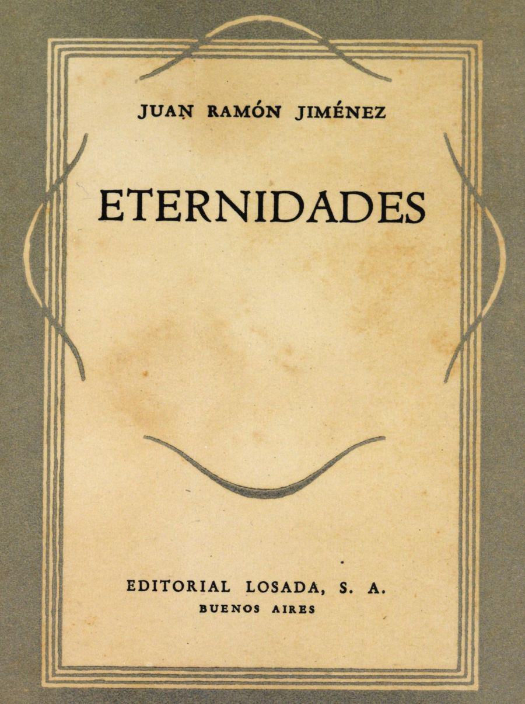

Juan Ramon Jiménez
Libros
Eternidades

Poemas:
Vino, primero, pura
Poema recitado:
No soy yo
Poema recitado:
Diario de un poeta recien casado
Poemas:
Soledad
Poema recitado:
Te deshojé como una rosa...